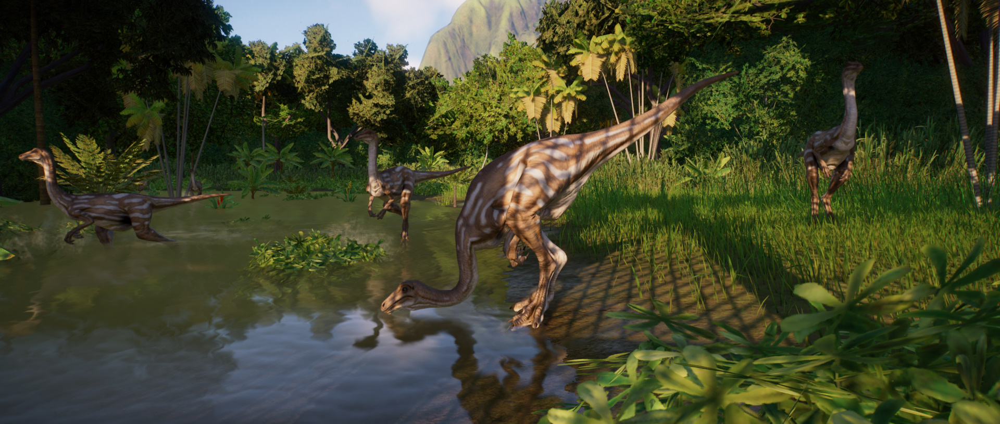

Gallimimus is a genus of theropod from the ornithomimidae family. Although its name translates to ‘chicken mimic’, Gallimimus is the biggest of the ornithomimid dinosaurs, at around 450kg and 4m in length – the name refers to its neck vertebrae, which are similar to those of chickens. Fast, agile, intelligent and with excellent vision. Gallimimus is well adapted to evading predators and catching its own prey.